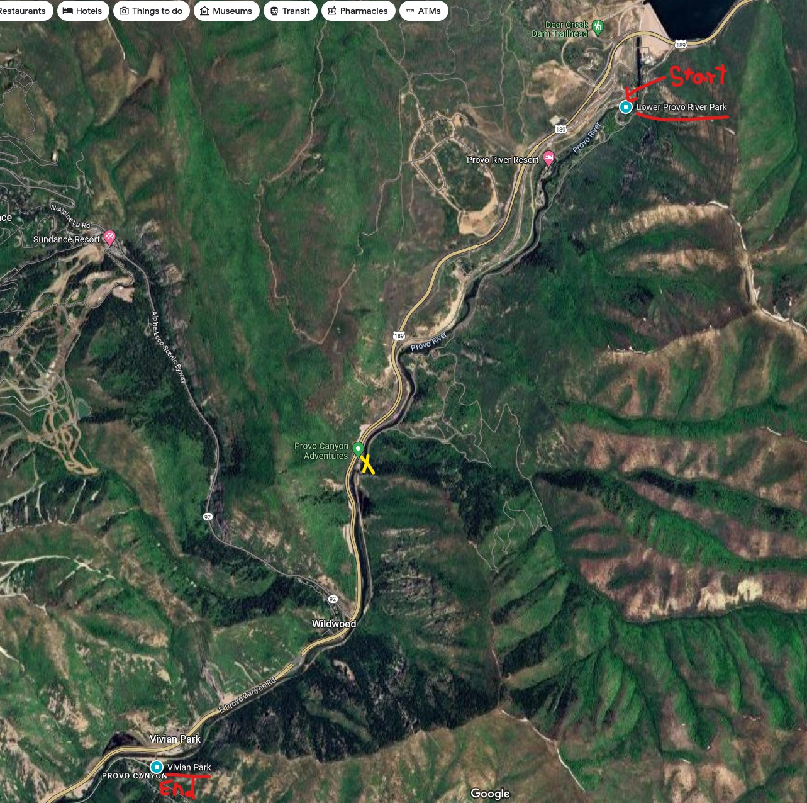

The When and Where
Date: July 7th (Sunday), 2024Time: 3:00 pm
Location: Vivian Park, Google Maps Pin
The Plan
Get ready for an unforgettable summer adventure! We're hitting the Provo River for a day of tubing, laughter, and making awesome memories together. Imagine floating down the river, soaking up the sun, and enjoying the beautiful scenery with the best company — our family!
After tubing, we'll be heading to Nunn's Park Pavillion #1 for Dinner and Activities such as Spikeball, Bachee Ball, Hammocking, Board Games, and more!
This is an open invitation to anyone crazy enough to hang out with us, so please feel free to bring friends if you'd like! The more the merrier! Note that they will need their own life jacket and tube unless arrangements have been explicitely made with me. Immediate Siblings (Flint included), please give me an estimated head count by the 7th if you are bringing friends so we can plan for food properly.
Tubing Details
We'll be meeting at Vivian Park at 3:00 pm and then carpooling to Lower Provo River Park near the bottom of Deer Creek Reservoir. Red 'Start' and 'End' points are marked on the map. A yellow 'X' marks where a railroad goes overhead and it is recommended to get out and back in at that location. We'll leave at least one car at Vivian Park so we can drive back to get the other cars at the top afterwards. The float will take around 90 minutes.
Map of Lower Provo River
Safety Concerns
Life Jackets are required on the provo river. Please let me know ASAP if you need one and do not have your own.
As of June 22nd, the water level is estimated around 694 CFS. Tubing is ideal between 150 - 900 CFS. You can check the current water level of the Lower Provo by clicking here.
What to Bring
- Sunscreen
- Swimsuit
- Tube
- Life Jacket (required by the city)
- Fanny Pack (for water)
- Strap for glasses/sunglasses
- Double zip-lock bags for phone/keys if you're taking those.
- Clothes for the Park Afterwards
- Water Shoes (No Flip Flops)
NOTE: Anything not tied down to you, will get irretrievably lost! Everything you bring on the river will get wet!
Dinner & After-Activities
Reservation Slot: 5:00 - 9:30pmTime: 5:00 pm (ish)
Location: Nunn's Park
Dinner Details
We'll get to the park around 5:00pm, and set up for dinner. If you have
suggestions for the menu or would like to volunteer to bring something, please send me a text!
We should start eating around 6:00pm.
Tentative Menu
- Grilled Chicken Thighs
- Corn on the Cob
- (side dish)
- (side dish)
- (beverage)
- (dessert)
Activity Details
There is plenty of shade and lawn space near our reserved pavillion (#1). If you would like to volunteer to bring a lawn or board game, please feel free to do so!
Provided Activities
- Hammocking
- Playground for Kids
- Board Games
- Spikeball
- Bachee Ball
Contact Information
Noah EwellText 801.641.2662